Work in the terminal interface¶
This guide is for working with your samples from one full-screen view, by the keyboard rather than by commands: browse and filter them, open one, change a value, compute, draw, read the history. The terminal interface, the TUI, does what the commands do, and shows the same previews before it writes.

Open it¶
samplekit alone, in a terminal, opens its start page. It offers the
project of the folder you are in first, then the projects you opened
recently; Enter opens the one marked, 1 to 9 a recent one. From the
start page, n sets up a new project by a few questions, o opens another
folder, and g opens this documentation in the browser, or the demo: the
home page's tensile test in six steps, each a project to try.
samplekit FOLDER tui opens a folder directly, past the start page.
The foot of each screen names the keys used most, and ends with ? all keys:
? lists every key of the screen you are on, and q goes back to the screen
you came from, until it quits. Every key is also listed in the TUI's
keys.
T, on the start page, the collection or a sample, chooses the TUI's
theme: each is tried on the screen as the cursor reaches it, and Enter
keeps it (choose the colours).
The list of samples¶
The TUI opens on the collection: one row per sample, its columns those you choose. The keys to try first:
Key |
What it does |
|---|---|
|
type a filter, as after |
|
sort by a column; |
|
choose the columns |
|
group by a field |
|
apply a saved query or profile |
|
open the sample under the cursor |
|
a new sample beside the one under the cursor: its name, then |
|
put the sample in the basket: |
|
update: show what is not current, and compute it on |
|
tag the basket, |
|
remove the sample, or the basket's: its file, asked first |
|
rename the sample, its own files and the links leading to it, asked first |
|
the collection's state: every value not current, in the words of |
|
the history, change by change |
|
take back the last change |
|
run a script, draw a figure, or write an export |
|
save what is shown as a query, a profile or an export |
A mark tells a value's state, as in a table of the command line: ⚠ not
current, ✎ written by hand over its formula, ✗ failed, ∅ never computed
or waiting (current and outdated).
The TUI remembers, for each folder, the filter, the sort, the grouping, the
columns and the basket, and opens there next time; x empties the basket.
A sample¶
Enter on a sample opens it: its attributes, its values and the marks of
their states, its tables, its note.
Key |
What it does |
|---|---|
|
the typing mode, on the cell under the cursor: see Typing |
|
the value's card: see A value's card |
|
add an attribute: its name, then its value |
|
write the note; |
|
open the table under the cursor; there, |
|
compute the value under the cursor, even typed over its formula |
|
update the sample: compute what is not current in it |
|
open the sample's own files: its photos, its reports |
|
follow an attribute |
|
rename the sample, its own files and the links leading to it |
|
the scripts, figures and exports of the sample |
A link is shown as Markdown shows it: its text alone, underlined, ↗ after
a web page and ✗ after a link that leads nowhere. A sample a link opens is
shown on its screen even where the filter leaves it out, or it belongs to
another project. The title bar says the way taken, steel-01 › aluminium-01, and Esc goes back along it, to the line of the link
followed. After everything a sample holds come the samples linking to it,
linked from: Enter follows one as a link. Typing a value, Tab after
[[ completes a sample's name (link samples).
E opens the sample's file, and M the project's model, in your editor:
the one VISUAL or EDITOR names, else Notepad on Windows and the system's
application for the file elsewhere; the TUI waits until it is closed, and
reads the file again. An editor of its own window, Notepad or code --wait,
leaves the TUI drawn, saying what it waits for; one in the terminal, vim or
nano, takes the terminal while it runs. n on one of a sample's own files, after o, shows it
in its folder, selected in Windows's Explorer.
Typing¶
e enters the typing mode on the cell under the cursor, as
Vim's insert mode is entered: TYPING at the foot of the screen says so, and
every other key keeps its meaning outside it. In the typing mode:
Key |
What it does |
|---|---|
a letter, a digit |
replaces the cell with what you type |
|
keeps the cell and goes down; on a cell not typed in, changes it without replacing it |
|
keeps the cell and goes right |
|
go from cell to cell, keeping a cell typed in |
|
changes the cell without replacing it |
|
takes out the attribute, or the table's row, under the cursor |
|
leaves the cell typed in, then the typing mode |
A sample's line is its cells: an attribute's name and its value, a value
with its uncertainty, its readings. Typing over a name renames the attribute;
A, out of the typing mode, adds one. A value and its
uncertainty are typed in one cell, with +-, which every keyboard has: 12.6 +- 0.02, shown 12.6 ± 0.02. 12.6 alone keeps the uncertainty, and 12.6 +- takes it out; a value without one shows ± —, where it can be given, and
opens as 12.6 +- . A value opens as it is shown, rounded:
left as it is, it keeps every digit it has. A cell never widens as you type
in it: its text scrolls inside it. The end of the status line shows the value
under the cursor with every digit, width = 12.513333333333334 ± 0.010088497300281277 mm.
A table is typed cell by cell in the same way, and its empty row at the foot
takes a new row, written once its index is given. The list of samples is
typed in too, without opening a sample: ← → choose the column, and
Shift+↑ Shift+↓ take several rows in the typing mode, what you type then
going to each; a sample in the basket takes it with the basket's others.
Lines are edited as in a text editor: the mouse or Shift and the arrows
select, Ctrl and the arrows move by word, Ctrl+Z undoes.
A value's card¶
i on a value, or on a table's cell holding one, opens its card: its
value with its uncertainty and its unit, its readings, its state in words and
why, then what it reads and what reads it, each with its value and its
state. A line of a sample shows only the mark of its value's state, ⚠,
✎, ✗ or ∅; its words are the card's. ↑ ↓ go from line to line of
the card, and e types over the line under the cursor, as the typing mode
does: the value itself, one it reads, or one that reads it. The change waits,
as every change does, and the card is drawn again as it makes it: what reads
a value changed is seen outdated at once. Esc closes the card.
Changes wait until w writes them¶
Nothing you change is written at once: a value, a row, an attribute, the
note, tags, a sample made with N, removed with D or renamed with R, what
a script changes, a state restored from the history, and what a computation
gives. Each change waits, and the screens show the files as it makes
them: what changed, and a sample made, in italics and in their own colour,
the theme's waiting
(choose the colours);
what is taken out is no longer shown, and the status line counts the files
not written. The files themselves are untouched until you write them,
so a computation can be tried and looked at before it counts: one that went
wrong is dropped, and leaves the history as it was.
Key |
What it does |
|---|---|
|
one preview of everything waiting, file by file; |
|
takes back the last change waiting; once nothing waits, the last change written |
C shows what it would compute, as compute does, and y computes; c
computes the value under the cursor at once. What they give waits with the
rest. Leaving with changes waiting asks whether to write them (w), drop
them (d) or keep them for next time (k); the terminal closed without the
question keeps them. Opened again, the project offers what waits, how many
files and since when.
A file changed meanwhile by another hand, in an editor or on the command line,
is not written over: what waits for it is laid again over the file as it now
is, field by field, and where both changed the same field, w says so and
writes nothing. An export and a figure are made from what is shown, changes
waiting included.
H lists the history, each change and what it changed: there, r puts the
files back as a change left them, the change waiting as any other. d shows
what one change changed, and marks it; d on another then compares the two,
value by value, as restore --at and diff do (the
history).
Scripts, figures and exports¶
p opens one menu of what the project offers, in three groups: the scripts,
the figures and the exports, Tab from one group to the next. They act on the
basket, on the sample open, or on the samples shown. A figure opens in a
window, or w writes it to a file; one the model draws for one sample is
written a file per sample, the name offered holding {name},
yield_point-{name}.pdf. A script runs in a window that shows what it prints
as it prints it; a question it asks with input() is answered on the line at
the window's foot (run a script). An export is previewed
before y writes it, and its first line, what is shown, writes the screen's table once to a
file you name.
Several projects¶
Opened on a folder above several projects, the TUI shows their samples together, each part headed by its project, and offers the figures and exports of the project the samples shown belong to (several projects).
See also¶
The TUI's keys, screen by screen.
Choose the colours: the themes SampleKit has, each drawn by the TUI, and how to make your own.
The home page does with commands what this guide does with keys.